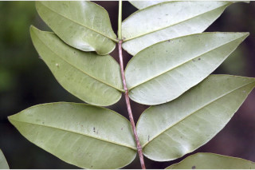
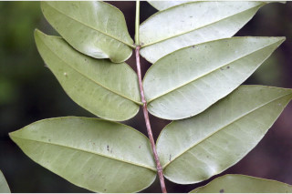
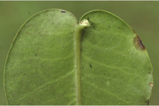
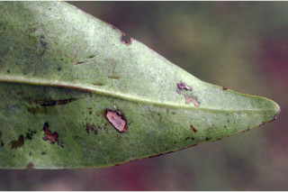
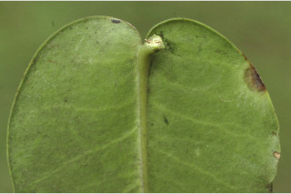
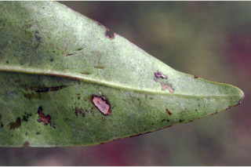
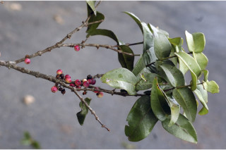
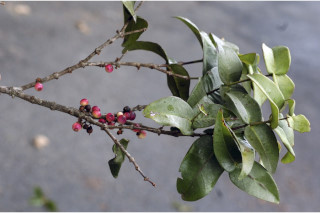

Trees up to 5 m tall.
5 ಮೀ. ಎತ್ತರದವರೆಗೆ ಬೆಳೆಯುವ ಮರಗಳು.
5 മീറ്റര് വരെ ഉയരമുളള മരങ്ങള്.
மரங்கள் 5 மீ. உயரம் வரை வளரக்கூடியது
Branchlets terete, glabrous.
ಕಿರುಕೊಂಬೆಗಳು ದುಂಡಾಕಾರದಲ್ಲಿದ್ದು ಮತ್ತು ರೋಮರಹಿತವಾಗಿರುತ್ತವೆ.
അരോമിലമായ, ഉരുണ്ട ഉപശാഖകള്.
சிறிய நுனிக்கிளைகள் குறுக்குவெட்டுத் தோற்றத்தில் வளையமானது, உரோமங்களற்றது.
Leaves simple, opposite, decussate, sessile or subsessile; lamina 5-13 x 2.5-5.5 cm, ovate to ovate-lanceolate, apex acute or obtuse, base rounded to subcordate, margin entire, thickly coriaceous; midrib canaliculate above; secondary_nerves and tertiary_nerves obscure or former slightly visible when dry.
ಎಲೆಗಳು ಸರಳವಾಗಿದ್ದು, ಕತ್ತರಿಯಾಕಾರದ ಅಭಿಮುಖ ಜೋಡನಾ ವ್ಯವಸ್ಥೆಯ –ಲ್ಲಿರುತ್ತವೆ ಮತ್ತು ತೊಟ್ಟುರಹಿತ ಅಥವಾ ಉಪತೊಟ್ಟುರಹಿತವಾಗಿರುತ್ತವೆ;ಪತ್ರಗಳು 5 - 13 X2.5 - 5.5 ಸೆಂ.ಮೀ. ಗಾತ್ರ ಹೊಂದಿದ್ದು ಅಂಡಾಕಾರದಿಂದ ಅಂಡ- ಭರ್ಜಿ ಯವರೆಗಿನ ಆಕಾರದಲ್ಲಿರುತ್ತವೆ;ಪತ್ರಗಳು ಚೂಪಾದ ಅಥವಾ ಚೂಪಲ್ಲದ ತುದಿ, ದುಂಡಾದುದರಿಂದ ಉಪ-ಹೃದಯಾಕಾರದವರೆಗಿನ ರೀತಿಯ ಬುಡ ಹೊಂದಿರುತ್ತವೆ;ಅಂಚು ನಯವಾಗಿರುತ್ತದೆ;ಪತ್ರಗಳು ದಪ್ಪವಾದ ತೊಗಲನ್ನೋಲುವ ಮಾದರಿಯವುಗಳಾಗಿರುತ್ತವೆ; ಮಧ್ಯನಾಳ ಪತ್ರದ ಮೇಲ್ಭಾಗದಲ್ಲಿ ಕಾಲುವೆ ಗೆರೆಗಳ ಸಮೇತವಿರುತ್ತದೆ; ಎರಡನೇ ಮತ್ತು ಮೂರನೇ ದರ್ಜೆಯ ನಾಳಗಳು ಅಗೋಚರ ಅಥವಾ ಎಲೆಗಳು ಒಣಗಿದ ಸಂದರ್ಭ -ದಲ್ಲಾದರೂ ಸೂಕ್ಷ್ಮವಾಗಿ ಕಾಣುವಂತಿರುತ್ತವೆ ;ಮೂರನೇ ದರ್ಜೆಯ ನಾಳಗಳು ಅಗೋಚರ.
അവൃന്തമോ ഉപഅവൃന്തമോ ആയ ലഘുവായ ഇലകള്, സമ്മുഖ, ഡെക്കുസേറ്റ് ക്രമത്തിലാണ്; പത്രഫലകത്തിന് 5 സെ.മീ മുതല് 13 സെ.മീ വരെ നീളവും 25 സെ.മീ മുതല് 5.5 സെ.മീ വരെ വീതിയും, ആകൃതി അണ്ഡാകാരം തൊട്ട് അണ്ഡാകാര-കുന്താകാരം വരെയാണ്, പത്രാഗ്രം നിശിതമോ ഉപകോണാകാരമോ ആണ്, പത്രാധാരം വൃത്താകാരം തൊട്ട് ഉപഹൃദയാകാരം വരെയാണ്, അരികുകള് അവിഭജിതമാണ്, കനത്തില് ചര്മ്മില പ്രകൃതം; മുഖ്യസിര മുകളില് ചാലുളളതാണ്; ദ്വിതീയ ഞരമ്പുകളും ത്രിതീയ ഞരമ്പുകളും അപ്രസക്തമോ ഉണങ്ങുമ്പോള് ആദ്യത്തേത് അല്പം ദൃശ്യമാകുന്നതോ ആണ്.
இலைகள் தனித்தவை, எதிரடுக்காமானவை, குறுக்குமறுக்குமானவை, காம்பற்றவை அல்லது மிகச்சிறிய காம்புடையது; இலை அலகு 5-13 X 2.5-5.5 செ.மீ., முட்டை முதல் முட்டை-ஈட்டி வடிவானது, அலகின் நுனி கூரியது அல்லது மழுங்கியது, அலகின் தளம் வட்டமானது முதல் மிகச்சிறிய இதய (கார்டேட்) வடிவம் போன்றது, அலகின் விளிம்பு முழுமையானது, தடித்த கோரியேசியஸ்; மையநரம்பு மேற்புறத்தில் அலகின் பரப்பைவிட பள்ளமானது; இரண்டாம் நிலை நரம்புகள் மற்றும் மூன்றாம் நிலை நரம்புகள் தெளிவற்றவை அல்லது உலரும் போது இரண்டாம் நிலை நரம்புகள் சிறிது கண்களுக்கு புலப்படக்கூடியது.
Flowers blue, fascicled, singly or in very short pedunculate cymes, generally on lateral tubercles.
ಹೂಗಳು ನೀಲಿಬಣ್ಣ ಹೊಂದಿದ್ದು ಗುಚ್ಛಗಳಲ್ಲಿರುತ್ತವೆ;ಗುಚ್ಛಗಳು ಒಂಟಿಯಾಗಿ ಅಥವಾ ತೀರಾ ಚಿಕ್ಕದಾದ ವೃಂತವುಳ್ಳ ಮಧ್ಯಾಭಿಸರ ಮಂಜರಿಯಲ್ಲಿರುತ್ತವೆ ಹಾಗೂ ಸಾಮಾನ್ಯವಾಗಿ ಪಾರ್ಶ್ವದಲ್ಲಿನ ಗುಬುಟುಗಳ ಮೇಲಿರುತ್ತವೆ.
നീലപ്പൂക്കള്, കൂട്ടമായോ ഒറ്റയായോ, വളരെ കുറിയ തണ്ടുളള സൈമുകളിലോ, സാധാരണയായി പാര്ശ്വസ്ഥ മുഴപ്പുകളില് ഉണ്ടാകുന്നു.
மலர்கள் நீல நிறமானது, தொகுப்பானவை, தனித்தது அல்லது மிகச்சிறிய மஞ்சரி காம்புடைய சைம், பொதுவாக கிளைகளின் பக்கவாட்டில் கழலைகளில் தோன்றுபவை.
Berry, globose, seed 1.
ಬೆರ್ರಿಗಳು ಒಂದು ಬೀಜವನ್ನೊಳಗೊಂಡಿರುತ್ತವೆ.
ഒറ്റ വിത്തുളള കായ, ഗോളാകാര ബെറിയാണ്.
முழுச்சதைகனி (பெர்ரி), கோளவடிவானது, விதை ஒன்றுடையது.

 


 





 
